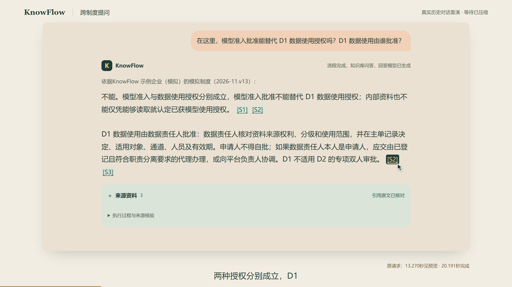

跨制度问答，有据可查。
点开引用核对原文，遇到缺失的审批记录，明确说明边界。

视频暂时未能播放。可以再点一次播放，或通过上方链接打开高清原片。
个人工作
基于开源检索底座二次开发，在 AI 辅助下完成。
- 资料与路由
- 接入制度资料，组织证据传递与工具路由。
- 工具观测
- 修复工具正文采集截断，让评测核对同一次执行的工具回执。
- 应用交付
- 用 FastAPI、SSE 和 SQLite 完成多轮问答、引用定位和会话恢复。
从制度问到
实际审批
同一个会话先查询规则，再追问上一周提交的申请。两问需要的证据不同。
模型准入批准能替代 D1 数据使用授权吗？D1 数据使用由谁批准？
两种授权分别成立。数据责任人核对资料来源、分级和使用范围，申请人不得自批。引用可分别回到模型准入和数据授权制度。
我上周提交的 D1 数据使用申请，现在批准了吗？
缺少这笔申请的实际审批记录，当前无法确认。刷新后可以继续查看两轮回答和来源。

回答依据
如何保留
LangGraph 判断请求需要知识检索、工具还是实际记录。演示首问经过以下知识问答路径。
Agentic RAG、MCP 与 Evaluation
混合检索
向量与 BM25 召回相关资料。
重排与选段
按问题相关性选择依据。
MCP 原文核验
读取来源，核对引用依据。
生成与审核
先展示待核验预览，绑定引用并审核后发布正式答案。
执行完成，
评分另行记录。
一轮真实评测使用 5 个公开自拟案例。独立模型评审完成 3 题，另外 2 题超时。
完整独立质量与性能验收仍有未完成项。
- 用例执行完成
- 5题
- 完成评分
- 3题
- 评审超时
- 2题
查看评测平台截图